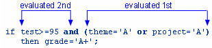

Overview
Introduction
You've learned how to create a SAS data set from raw data that is stored in an external file. You've also learned how to subset observations and how to assign values to variables.
This chapter shows you additional techniques for creating and managing variables. In this chapter, you learn how to create accumulator variables, assign variable values conditionally, select variables, and assign permanent labels and formats to variables.
| Obs | ID | Name | RestHR | MaxHR | RecHR | Tolerance | TotalTime | Cumalative Total Seconds (+5,400) |
|---|---|---|---|---|---|---|---|---|
| 1 | 2458 | Murray, W | 72 | 185 | 128 | D | 758 | 6,158 |
| 2 | 2539 | LaMance, K | 75 | 168 | 141 | D | 706 | 6,864 |
| 3 | 2572 | Oberon, M | 74 | 177 | 138 | D | 731 | 7,595 |
| 4 | 2574 | Peterson, V | 80 | 164 | 137 | D | 849 | 8,444 |
| 5 | 2584 | Takahashi, Y | 76 | 163 | 135 | D | 967 | 9,411 |
Objectives
In this chapter, you learn to
- create variables that accumulate variable values.
- initialize values of accumulator variables.
- assign values to variables conditionally.
- specify an alternative action when a condition is false.
- specify lengths for variables.
- delete unwanted observations.
- select variables.
- assign permanent labels and formats.
Creating and Modifying Variables
Accumulating Totals
It is often useful to create a variable that accumulates the values of another variable.
Suppose you want to create the data set Clinic.Stress and to add a new variable, SumSec, to accumulate the total number of elapsed seconds in treadmill stress tests.
| SAS Data Set Clinic.Stress (Partial Listing) | ||||||||
|---|---|---|---|---|---|---|---|---|
| ID | Name | RestHR | MaxHR | RecHR | TimeMin | TimeSec | Tolerance | TotalTime |
| 2458 | Murray, W | 72 | 185 | 128 | 12 | 38 | D | 758 |
| 2462 | Almers, C | 68 | 171 | 133 | 10 | 5 | I | 605 |
| 2501 | Bonaventure, T | 78 | 177 | 139 | 11 | 13 | I | 673 |
| 2523 | Johnson, R | 69 | 162 | 114 | 9 | 42 | S | 582 |
| 2359 | LaMance, K | 75 | 168 | 141 | 11 | 46 | D | 706 |
To add the result of an expression to an accumulator variable, you can use a Sum statement in your DATA step.
General form, Sum statement:
variable+expression;
where
- variable specifies the name of the accumulator variable. This variable must be numeric. The variable is automatically set to 0 before the first observation is read. The variable's value is retained from one DATA step execution to the next.
- expression is any valid SAS expression.
| Warning | If the expression produces a missing value, the Sum statement treats it like a zero. (By contrast, in an assignment statement, a missing value is assigned if the expression produces a missing value.) |
|---|
| Note | The Sum statement is one of the few SAS statements that doesn't begin with a keyword. |
|---|
The Sum statement adds the result of the expression that is on the right side of the plus sign (+) to the numeric variable that is on the left side of the plus sign. At the beginning of the DATA step, the value of the numeric variable is not set to missing as it usually is when reading raw data. Instead, the variable retains the new value in the program data vector for use in processing the next observation.
Example
To find the total number of elapsed seconds in treadmill stress tests, you need a variable (in this example, SumSec) whose value begins at 0 and increases by the amount of the total seconds in each observation. To calculate the total number of elapsed seconds in treadmill stress tests, you use the Sum statement shown below.
data clinic.stress;
infile tests;
input ID $ 1-4 Name $ 6-25 RestHR 27-29 MaxHR 31-33
RecHR 35-37 TimeMin 39-40 TimeSec 42-43
Tolerance $ 45;
TotalTime=(timemin*60)+timesec;
SumSec+totaltime;
run;
The value of the variable on the left side of the plus sign (here, SumSec) begins at 0 and increases by the value of TotalTime with each observation.
| SumSec | = | TotalTime | + | Previous Total |
|---|---|---|---|---|
| 0 | ||||
| 758 | = | 758 | + | 0 |
| 1363 | = | 605 | + | 758 |
| 2036 | = | 673 | + | 1363 |
| 2618 | = | 582 | + | 2036 |
| 3324 | = | 706 | + | 2618 |
Initializing Accumulator Variables
In a previous example, the accumulator variable SumSec was initialized to 0 by default before the first observation was read. But what if you want to initialize SumSec to a different number, such as the total seconds from previous treadmill stress tests?
You can use the RETAIN statement to assign an initial value other than the default value of 0 to a variable whose value is assigned by a Sum statement.
The RETAIN statement
- assigns an initial value to a retained variable.
- prevents variables from being initialized each time the DATA step executes.
General form, simple RETAIN statement for initializing accumulator variables:
RETAIN variable initial-value;
where
- variable is a variable whose values you want to retain.
- initial-value specifies an initial value (numeric or character) for the preceding variable.
| Note | The RETAIN statement
|
|---|
Example
Suppose you want to add 5400 seconds (the accumulated total seconds from a previous treadmill stress test) to the variable SumSec in the Clinic.Stress data set when you create the data set. To initialize SumSec with the value 5400, you use the RETAIN statement shown below:
data clinic.stress;
infile tests;
input ID $ 1-4 Name $ 6-25 RestHR 27-29 MaxHR 31-33
RecHR 35-37 TimeMin 39-40 TimeSec 42-43
Tolerance $ 45;
TotalTime=(timemin*60)+timesec;
retain SumSec 5400;
sumsec+totaltime;
run;
Now the value of SumSec begins at 5400 and increases by the value of TotalTime with each observation.
| SumSec | = | TotalTime | + | Previous Total |
|---|---|---|---|---|
| 5400 | ||||
| 6158 | = | 758 | + | 0 |
| 6763 | = | 605 | + | 6158 |
| 7436 | = | 673 | + | 6763 |
| 8018 | = | 582 | + | 7436 |
| 8724 | = | 706 | + | 8018 |
Assigning Values Conditionally
In the previous section, you created the variable SumSec by using a Sum statement to add total seconds from a treadmill stress test. This time, let's create a variable that categorizes the length of time that a subject spends on the treadmill during a stress test. This new variable, TestLength, will be based on the value of the existing variable TotalTime. The value of TestLength will be assigned conditionally.
| If This Is the TotalTime | Then This Is the TestLength |
|---|---|
| greater than 800 | Long |
| 750 - 800 | Normal |
| less than 750 | Short |
To perform an action conditionally, use an IF-THEN statement. The IF-THEN statement executes a SAS statement when the condition in the IF clause is true.
General form, IF-THEN statement:
IF expression THEN statement;
where
- expression is any valid SAS expression.
- statement is any executable SAS statement.
Example
To assign the value Long to the variable TestLength when the value of TotalTime is greater than 800, add the following IF-THEN statement to your DATA step:
data clinic.stress;
infile tests;
input ID $ 1-4 Name $ 6-25 RestHR 27-29 MaxHR 31-33
RecHR 35-37 TimeMin 39-40 TimeSec 42-43
Tolerance $ 45;
TotalTime=(timemin*60)+timesec;
retain SumSec 5400;
sumsec+totaltime;
if totaltime>800 then TestLength='Long';
run;
SAS executes the assignment statement only when the condition (TotalTime>800) is true. If the condition is false, then the value of TestLength will be missing.
Comparison and Logical Operators
When writing IF-THEN statements, you can use any of the following comparison operators:
| Operator | Comparison Operation |
|---|---|
| = or eq | equal to |
| ^= or ne | not equal to |
| > or gt | greater than |
| < or lt | less than |
| >= or ge | greater than or equal to |
| <= or le | less than or equal to |
| in | equal to one of a list |
Examples
if test<85 and time<=20
then Status='RETEST';
if region in ('NE','NW','SW')
then Rate=fee-25;
if target gt 300 or sales ge 50000
then Bonus=salary*.05;
You can also use these logical operators:
| Operator | Logical Operation |
|---|---|
| & | and |
| | | or |
| ^ or ~ | not |
Use the AND operator to execute the THEN statement if both expressions that are linked by AND are true.
if status='OK' and type=3
then Count+1;
if (age^=agecheck | time^=3)
& error=1 then Test=1;
Use the OR operator to execute the THEN statement if either expression that is linked by OR is true.
if (age^=agecheck | time^=3)
& error=1 then Test=1;
if status='S' or cond='E'
then Control='Stop';
Use the NOT operator with other operators to reverse the logic of a comparison.
if not(loghours<7500)
then Schedule='Quarterly';
if region not in ('NE','SE')
then Bonus=200;
Character values must be specified in the same case in which they appear in the data set and must be enclosed in quotation marks.
if status='OK' and type=3
then Count+1;
if status='S' or cond='E'
then Control='Stop';
if not(loghours<7500)
then Schedule='Quarterly';
if region not in ('NE','SE')
then Bonus=200;
Logical comparisons that are enclosed in parentheses are evaluated as true or false before they are compared to other expressions. In the example below, the OR comparison in parentheses is evaluated before the first expression and the AND operator are evaluated.
| Warning | In SAS, any numeric value other than 0 or missing is true, and a value
of 0 or missing is false. Therefore, a numeric variable or expression can
stand alone in a condition. If its value is a number other than 0 or missing,
the condition is true; if its value is 0 or missing, the condition is false. 0 = False . = False 1 = True As a result, you need to be careful when using the OR operator with a series of comparisons. Remember that only one comparison in a series of OR comparisons must be true to make a condition true, and any nonzero, nonmissing constant is always evaluated as true. Therefore, the following subsetting IF statement is always true: if x=1 or 2; SAS first evaluates x=1, and the result can be either true or false. However, because the 2 is evaluated as nonzero and nonmissing (true), the entire expression is true. In the following statement, however, the condition is not necessarily true because either comparison can evaluate as true or false: if x=1 or x=2; |
|---|
Providing an Alternative Action
Now suppose you want to assign a value to TestLength that is based on the other possible values of TotalTime. One way to do this is to add IF-THEN statements to the other two conditions, as shown below.
if totaltime>800 then TestLength='Long'; if 750<=totaltime<=800 then TestLength='Normal'; if totaltime<750 then TestLength='Short';
However, when the DATA step executes, each IF statement is evaluated in order, even if the first condition is true. This wastes system resources and slows the processing of your program.
Instead of using a series of IF-THEN statements, you can use the ELSE statement to specify an alternative action to be performed when the condition in an IF-THEN statement is false. As shown below, you can write multiple ELSE statements to specify a series of mutually exclusive conditions.
if totaltime>800 then TestLength='Long'; else if 750<=totaltime<=800 then TestLength='Normal'; else if totaltime<750 then TestLength='Short';
The ELSE statement must immediately follow the IF-THEN statement in your program. An ELSE statement executes only if the previous IF-THEN/ELSE statement is false.
General form, ELSE statement:
ELSE statement;
where statement is any executable SAS statement, including another IF-THEN statement.
So to assign a value to TestLength when the condition in your IF-THEN statement is false, you can add the ELSE statement to your DATA step, as shown below:
data clinic.stress;
infile tests;
input ID $ 1-4 Name $ 6-25 RestHR 27-29 MaxHR 31-33
RecHR 35-37 TimeMin 39-40 TimeSec 42-43
Tolerance $ 45;
TotalTime=(timemin*60)+timesec;
retain SumSec 5400;
sumsec+totaltime;
if totaltime>800 then TestLength='Long';
else if 750<=totaltime<=800 then TestLength='Normal';
else if totaltime<750 then TestLength='Short';
run;
Using ELSE statements with IF-THEN statements can save resources:
- Using IF-THEN statements without the ELSE statement causes SAS to evaluate all IFTHEN statements.
- Using IF-THEN statements with the ELSE statement causes SAS to execute IF-THEN statements until it encounters the first true statement. Subsequent IF-THEN statements are not evaluated.
For greater efficiency, construct your IF-THEN/ELSE statements with conditions of decreasing probability.
| Note | Remember that you can use PUT statements to test your conditional logic.
data clinic.stress;
infile tests;
input ID $ 1-4 Name $ 6-25 RestHR 27-29 MaxHR 31-33
RecHR 35-37 TimeMin 39-40 TimeSec 42-43
Tolerance $ 45;
TotalTime=(timemin*60)+timesec;
retain SumSec 5400;
sumsec+totaltime;
if totaltime>800 then TestLength='Long';
else if 750<=totaltime<=800 then TestLength='Normal';
else put 'NOTE: Check this Length: ' totaltime=;
run;
|
|---|
Specifying Lengths for Variables
Previously, you added IF-THEN and ELSE statements to a DATA step in order to create the variable TestLength. Values for TestLength were assigned conditionally, based on the value for TotalTime.
data clinic.stress;
infile tests;
input ID $ 1-4 Name $ 6-25 RestHR 27-29 MaxHR 31-33
RecHR 35-37 TimeMin 39-40 TimeSec 42-43
Tolerance $ 45;
TotalTime=(timemin*60)+timesec;
retain SumSec 5400;
sumsec+totaltime;
if totaltime>800 then TestLength='Long';
else if 750<=totaltime<=800 then TestLength='Normal';
else if totaltime<750 then TestLength='Short';
run;
But look what happens when you submit this program.
During compilation, when creating a new character variable in an assignment statement, SAS allocates as many bytes of storage space as there are characters in the first value that it encounters for that variable. In this case, the first value for TestLength occurs in the IF-THEN statement, which specifies a four-character value (Long). So TestLength is assigned a length of 4, and any longer values (Normal and Short) are truncated.
| Variable TestLength (Partial Listing) |
|---|
| TestLength |
| Norm |
| Shor |
| Shor |
| Shor |
| Norm |
| Shor |
| Long |
| ... |
The example above assigns a character constant as the value of the new variable. The table that follows lists more examples of the default type and length that SAS assigns when the type and length of a variable are not explicitly set.
| Expression | Example | Resulting Type of X | Resulting Length of X | Explanation |
|---|---|---|---|---|
| Character variable | length a $ 4; x=a; |
Character variable | 4 | Length of source variable |
| Character literal (character constant) | x='ABC'; x='ABCDE'; |
Character variable | 3 | Length of first literal (constant) encountered |
| Concatenation of variables | length a $ 4 b $ 6 c $ 2; x=a||b||c; |
Character variable | 12 | Sum of the lengths of all variables |
| Concatenation of variables and literals | length a $ 4; x=a||'CAT'; x=a||'CATNIP'; |
Character variable | 7 | Sum of the lengths of variables and literals (constants) encountered in first assignment statement |
| Numeric variable | length a 4; x=a; |
Numeric variable | 8 | Default numeric length (8 bytes unless otherwise specified) Note: In general, it is not recommended that you change the default length of numeric variables, as this can affect numeric precision. |
You can use a LENGTH statement to specify a length (the number of bytes) for TestLength before the first value is referenced elsewhere in the DATA step.
General form, LENGTH statement:
LENGTH variable(s) <$> length;
where
- variable(s) names the variable(s) to be assigned a length.
- $ is specified if the variable is a character variable.
- length is an integer that specifies the length of the variable.
Examples
length Type $ 8; length Address1 Address2 Address3 $ 200; length FirstName $ 12 LastName $ 16;
Within your program, you include a LENGTH statement to assign a length to accommodate the longest value of the variable TestLength. The longest value is Normal, which has six characters. Because TestLength is a character variable, you must follow the variable name with a dollar sign ($).
data clinic.stress;
infile tests;
input ID $ 1-4 Name $ 6-25 RestHR 27-29 MaxHR 31-33
RecHR 35-37 TimeMin 39-40 TimeSec 42-43
Tolerance $ 45;
TotalTime=(timemin*60)+timesec;
retain SumSec 5400;
sumsec+totaltime;
length TestLength $ 6;
if totaltime>800 then testlength='Long';
else if 750<=totaltime<=800 then testlength='Normal';
else if totaltime<750 then TestLength='Short';
run;
| Variable TestLength (Partial Listing) |
|---|
| TestLength |
| Normal |
| Short |
| Short |
| Short |
| Normal |
| Short |
| Long |
| ... |
Subsetting Data
Deleting Unwanted Observations
So far in this chapter, you've learned to use IF-THEN statements to execute assignment statements conditionally. But you can specify any executable SAS statement in an IF-THEN statement. For example, you can use an IF-THEN statement with a DELETE statement to determine which observations to omit from the data set that SAS is creating as it reads raw data.
- The IF-THEN statement executes a SAS statement when the condition in the IF clause is true.
- The DELETE statement stops processing the current observation.
General form, DELETE statement:
DELETE;
To conditionally execute a DELETE statement, you submit a statement in the following general form:
IF expression THEN DELETE;
If the expression is
- true, the DELETE statement executes, and control returns to the top of the DATA step (the observation is deleted).
- false, the DELETE statement does not execute, and processing continues with the next statement in the DATA step.
Example
The IF-THEN and DELETE statements below omit any observations whose values for RestHR are lower than 70.
data clinic.stress;
infile tests;
input ID $ 1-4 Name $ 6-25 RestHR 27-29 MaxHR 31-33
RecHR 35-37 TimeMin 39-40 TimeSec 42-43
Tolerance $ 45;
if resthr<70 then delete;
TotalTime=(timemin*60)+timesec;
retain SumSec 5400;
sumsec+totaltime;
length TestLength $ 6;
if totaltime>800 then testlength='Long';
else if 750<=totaltime<=800 then testlength='Normal';
else if totaltime<750 then TestLength='Short';
run;
Selecting Variables with the DROP= and KEEP= Data Set Options
Sometimes you might need to read and process fields that you don't want to keep in your data set. In this case, you can use the DROP= and KEEP= data set options to specify the variables that you want to drop or keep.
Use the KEEP= option instead of the DROP= option if more variables are dropped than kept. You specify data set options in parentheses after a SAS data set name.
General form, DROP= and KEEP= data set options:
(DROP=variable(s))
(KEEP=variable(s))
where
- the DROP= or KEEP= option, in parentheses, follows the name of the data set that contains the variables to be dropped or kept.
- variable(s) identifies the variables to drop or keep.
Example
Suppose you are interested in keeping only the new variable TotalTime and not the original variables TimeMin and TimeSec. You can drop TimeMin and TimeSec when you create the Stress data set.
data clinic.stress(drop=timemin timesec);
infile tests;
input ID $ 1-4 Name $ 6-25 RestHR 27-29 MaxHR 31-33
RecHR 35-37 TimeMin 39-40 TimeSec 42-43
Tolerance $ 45;
if tolerance='D';
TotalTime=(timemin*60)+timesec;
retain SumSec 5400;
sumsec+totaltime;
length TestLength $ 6;
if totaltime>800 then testlength='Long';
else if 750<=totaltime<=800 then testlength='Normal';
else if totaltime<750 then TestLength='Short';
run;
| SAS Data Set Clinic.Stress | ||||||||
|---|---|---|---|---|---|---|---|---|
| ID | Name | RestHR | MaxHR | RecHR | Tolerance | TotalTime | SumSec | TestLength |
| 2458 | Murray, W | 72 | 185 | 128 | D | 758 | 6158 | Normal |
| 2539 | LaMance, K | 75 | 168 | 141 | D | 706 | 6864 | Short |
| 2552 | Reberson, P | 69 | 158 | 139 | D | 941 | 7805 | Long |
| 2572 | Oberon, M | 74 | 177 | 138 | D | 731 | 8536 | Short |
| 2574 | Peterson, V | 80 | 164 | 137 | D | 849 | 9385 | Long |
| 2584 | Takahashi, Y | 76 | 163 | 135 | D | 967 | 10352 | Long |
Another way to exclude variables from your data set is to use the DROP statement or the KEEP statement. Like the DROP= and KEEP= data set options, these statements drop or keep variables. However, the DROP statement differs from the DROP= data set option in the following ways:
- You cannot use the DROP statement in SAS procedure steps.
- The DROP statement applies to all output data sets that are named in the DATA statement.
- To exclude variables from some data sets but not from others, place the appropriate DROP= data set option next to each data set name that is specified in the DATA statement.
The KEEP statement is similar to the DROP statement, except that the KEEP statement specifies a list of variables to write to output data sets. Use the KEEP statement instead of the DROP statement if the number of variables to keep is significantly smaller than the number to drop.
General form, DROP and KEEP statements:
DROP variable(s);
KEEP variable(s);
where variable(s) identifies the variables to drop or keep.
Example
The two programs below produce the same results. The first example uses the DROP= data set option; the second example uses the DROP statement.
data clinic.stress (drop=timemin timesec);
infile tests;
input ID $ 1-4 Name $ 6-25 RestHR 27-29 MaxHR 31-33
RecHR 35-37 TimeMin 39-40 TimeSec 42-43
Tolerance $ 45;
if tolerance='D';
TotalTime=(timemin*60)+timesec;
retain SumSec 5400;
sumsec+totaltime;
length TestLength $ 6;
if totaltime>800 then testlength='Long';
else if 750<=totaltime<=800 then testlength='Normal';
else if totaltime<750 then TestLength='Short';
run;
data clinic.stress;
infile tests;
input ID $ 1-4 Name $ 6-25 RestHR 27-29 MaxHR 31-33
RecHR 35-37 TimeMin 39-40 TimeSec 42-43
Tolerance $ 45;
if tolerance='D';
drop timemin timesec;
TotalTime=(timemin*60)+timesec;
retain SumSec 5400;
sumsec+totaltime;
length TestLength $ 6;
if totaltime>800 then testlength='Long';
else if 750<=totaltime<=800 then testlength='Normal';
else if totaltime<750 then TestLength='Short';
run;
Assigning Permanent Labels and Formats
At this point, you've read and manipulated your raw data to obtain the observations, variables, and variable values that you want. Your final task in this chapter is to permanently assign labels and formats to variables.
In Chapter, Creating List Reports, you practiced temporarily assigning labels and formats within a PROC step. These temporary labels and formats are applicable only for the duration of the step. To permanently assign labels and formats, you use LABEL and FORMAT statements in DATA steps.
| Note | Remember that labels and formats do not affect how data is stored in the data set, only how data appears in output. |
|---|
Example
To specify the label Cumulative Total Seconds (+5,400) and the format COMMA6. for the variable SumSec, you can submit the following program:
data clinic.stress;
infile tests;
input ID $ 1-4 Name $ 6-25 RestHR 27-29 MaxHR 31-33
RecHR 35-37 TimeMin 39-40 TimeSec 42-43
Tolerance $ 45;
if resthr<70 then delete;
if tolerance='D';
drop timemin timesec;
TotalTime=(timemin*60)+timesec;
retain SumSec 5400;
sumsec+totaltime;
length TestLength $ 6;
if totaltime>800 then testlength='Long';
else if 750<=totaltime<=800 then testlength='Normal';
else if totaltime<750 then TestLength='Short';
label sumsec='Cumulative Total Seconds (+5,400)';
format sumsec comma6.;
run;
You're finished! When you print the new data set, SumSec is labeled and formatted as specified. (Don't forget to include the LABEL option in the PROC PRINT statement.)
proc print data=clinic.stress label; run;
| Obs | ID | Name | RestHR | MaxHR | RecHR | Tolerance | TotalTime | Cumulative Total Seconds (+5,400) |
|---|---|---|---|---|---|---|---|---|
| 1 | 2458 | Murray, W | 72 | 185 | 128 | D | 758 | 6,158 |
| 2 | 2539 | LaMance, K | 75 | 168 | 141 | D | 706 | 6,854 |
| 3 | 2572 | Oberon, M | 74 | 177 | 138 | D | 731 | 7,595 |
| 4 | 2574 | Peterson, V | 80 | 164 | 137 | D | 849 | 8,444 |
| 5 | 2584 | Takahashi, Y | 76 | 163 | 135 | D | 967 | 9,411 |
| Note | Remember that many SAS procedures automatically use permanent labels and formats i without requiring additional statements or options. |
|---|
| Warning | If you assign temporary labels or formats within a PROC step, they override any permanent labels or formats that were assigned during the DATA step. |
|---|
Assigning Values Conditionally Using SELECT Groups
Earlier in this chapter, you learned to assign values conditionally by using IF-THEN/ELSE statements. You can also use SELECT groups in DATA steps to perform conditional processing.
A SELECT group contains these statements:
| Use This Statement | To Perform This Action |
|---|---|
| SELECT | begins a SELECT group. |
| WHEN | identifies SAS statements that are executed when a particular condition is true. |
| OTHERWISE (optional) | specifies a statement to be executed if no WHEN condition is met. |
| END | ends a SELECT group. |
You can decide whether to use IF-THEN/ELSE statements or SELECT groups based on the following criteria.
When you have a long series of mutually exclusive conditions and the comparison is numeric, using a SELECT group is slightly more efficient than using a series of IF-THEN or IF-THEN/ELSE statements because CPU time is reduced. SELECT groups also make the program easier to read and debug.
For programs with few conditions, use IF-THEN/ELSE statements.
General form, SELECT group:
SELECT <(select-expression)>;
WHEN-1 (when-expression-1 <..., when-expression-n>) statement;
WHEN-n (when-expression-1 <..., when-expression-n>) statement;
<OTHERWISE statement;>
END;
where
- SELECT begins a SELECT group.
- the optional select-expression specifies any SAS expression that evaluates to a single value.
- WHEN identifies SAS statements that are executed when a particular condition is true.
- when-expression specifies any SAS expression, including a compound expression. You must specify at least one when-expression.
- statement is any executable SAS statement. You must specify the statement argument.
- the optional OTHERWISE statement specifies a statement to be executed if no WHEN condition is met.
- END ends a SELECT group.
Example
The following code is a simple example of a SELECT group. Notice that the variable a is specified in the SELECT statement, and various values to compare to a are specified in the WHEN statements. When the value of the variable a is
- 1, x is multiplied by 10
- 3, 4, or 5, x is multiplied by 100
- 2 or any other value, nothing happens.
select (a); when (1) x=x*10; when (3,4,5) x=x*100; otherwise; end;
Example: SELECT Group in a DATA Step
Now let's look at a SELECT group in context. In the DATA step below, the SELECT group assigns values to the variable Group based on values of the variable JobCode. Most of the assignments are one-to-one correspondences, but ticket agents (the JobCode values TA1, TA2, and TA3) are grouped together, as are values in the Other category.
data emps(keep=salary group);
set sasuser.payrollmaster;
length Group $ 20;
select(jobcode);
when ("FA1") group="Flight Attendant I";
when ("FA2") group="Flight Attendant II";
when ("FA3") group="Flight Attendant III";
when ("ME1") group="Mechanic I";
when ("ME2") group="Mechanic II";
when ("ME3") group="Mechanic III";
when ("NA1") group="Navigator I";
when ("NA2") group="Navigator II";
when ("NA3") group="Navigator III";
when ("PT1") group="Pilot I";
when ("PT2") group="Pilot II";
when ("PT3") group="Pilot III";
when ("TA1","TA2","TA3") group="Ticket Agents";
otherwise group="Other";
end;
run;
Notice that in this case the SELECT statement does contain a select-expression. You are checking values of a single variable, so using select(jobcode) and only the JobCode value in each WHEN statement is more concise than eliminating the select-expression and repeating the variable in each when-expression, as in when(jobcode="FA1").
| Note | Notice that the LENGTH statement in the DATA step above specifies a length of 20 for Group. Remember that without the LENGTH statement, values for Group might be truncated, as the first value for Group (Flight Attendant I) is not the longest possible value. |
|---|
| Warning | When you are comparing values in the when-expression, be sure to
express the values exactly as they are coded in the data. For example, the
when-expression below would be evaluated as false because the values
for JobCode in Sasuser.Payrollmaster are stored in uppercase letters. when ("fa1") group="Flight Attendant I"; In this case, given the SELECT group above, Group would be assigned the value Other. |
|---|
Specifying SELECT Statements with Expressions
As you saw in the general form for SELECT groups, you can optionally specify a selectexpression in the SELECT statement. The way SAS evaluates a when-expression depends on whether you specify a select-expression.
If you do specify a select-expression in the SELECT statement, SAS compares the value of the select-expression with the value of each when-expression. That is, SAS evaluates the selectexpression and when-expression, compares the two for equality, and returns a value of true or false.
- If the comparison is true, SAS executes the statement in the WHEN statement.
- If the comparison is false, SAS proceeds either to the next when-expression in the current WHEN statement, or to the next WHEN statement if no more expressions are present. If no WHEN statements remain, execution proceeds to the OTHERWISE statement, if one is present.
| Warning | If the result of all SELECT-WHEN comparisons is false and no
OTHERWISE statement is present, SAS issues an error message and
stops executing the DATA step. In the following SELECT group, SAS determines the value of toy and compares it to values in each WHEN statement in turn. If a WHEN statement is true compared to the toy value, then SAS assigns the related price and continues processing the rest of the DATA step. If none of the comparisons is true, then SAS executes the OTHERWISE statement and writes a debugging message to the SAS log.
select (toy);
when ("Bear") price=35.00;
when ("Violin") price=139.00;
when ("Top","Whistle","Duck") price=7.99;
otherwise put "Check unknown toy: " toy=;
|
|---|
Specifying SELECT Statements without Expressions
If you don't specify a select-expression, SAS evaluates each when-expression to produce a result of true or false.
- If the result is true, SAS executes the statement in the WHEN statement.
- If the result is false, SAS proceeds either to the next when-expression in the current WHEN statement, or to the next WHEN statement if no more expressions are present, or to the OTHERWISE statement if one is present. (That is, SAS performs the action that is indicated in the first true WHEN statement.)
If more than one WHEN statement has a true when-expression, only the first WHEN statement is used; once a when-expression is true, no other when-expressions are evaluated.
| Warning | If the result of all when-expressions is false and no OTHERWISE
statement is present, SAS issues an error message. In the example below, the SELECT statement does not specify a selectexpression. The WHEN statements are evaluated in order, and only one is used. For example, if the value of toy is Bear and the value of month is FEB, only the second WHEN statement is used, even though the condition in the third WHEN statement is also met. In this case, the variable price is assigned the value 25.00.
select;
when (toy="Bear" and month in ('OCT', 'NOV', 'DEC'))
price=45.00;
when (toy="Bear" and month in ('JAN', 'FEB'))
price=25.00;
when (toy="Bear") price=35.00;
otherwise;
end;
|
|---|
Grouping Statements Using DO Groups
So far in this chapter, you've seen examples of conditional processing (IF-THEN/ELSE statements and SELECT groups) that execute only a single SAS statement when a condition is true. However, you can also execute a group of statements as a unit by using DO groups.
To construct a DO group, you use the DO and END statements along with other SAS statements.
General form, simple DO group:
DO;
SAS statements
END;
where
- the DO statement begins DO-group processing.
- SAS statements between the DO and END statements are called a DO group and execute as a unit.
- the END statement terminates DO-group processing.
| Note | You can nest DO statements within DO groups. |
|---|
You can use DO groups in IF-THEN/ELSE statements and SELECT groups to perform many statements as part of the conditional action.
Examples
In this simple DO group, the statements between DO and END are performed only when TotalTime is greater than 800. If TotalTime is less than or equal to 800, statements in the DO group do not execute, and the program continues with the assignment statement that follows the appropriate ELSE statement.
data clinic.stress;
infile tests;
input ID $ 1-4 Name $ 6-25 RestHR 27-29 MaxHR 31-33
RecHR 35-37 TimeMin 39-40 TimeSec 42-43
Tolerance $ 45;
TotalTime=(timemin*60)+timesec;
retain SumSec 5400;
sumsec+totaltime;
length TestLength $ 6 Message $ 20;
if totaltime>800 then
do;
testlength='Long';
message='Run blood panel';
end;
else if 750<=totaltime<=800 then testlength='Normal';
else if totaltime<750 then TestLength='Short';
run;
In the SELECT group below, the statements between DO and END are performed only when the value of Payclass is hourly. Notice that an IF-THEN statement appears in the DO group; the PUT statement executes only when Hours is greater than 40. The second END statement in the program closes the SELECT group.
data payroll;
set salaries;
select(payclass);
when ('monthly') amt=salary;
when ('hourly')
do;
amt=hrlywage*min(hrs,40);
if hrs>40 then put 'CHECK TIMECARD';
end;
otherwise put 'PROBLEM OBSERVATION';
end;
run;
Indenting and Nesting DO Groups
You can nest DO groups to any level, just like you nest IF-THEN/ELSE statements. (The memory capabilities of your system might limit the number of nested DO statements that you can use. For details, see the SAS documentation about how many levels of nested DO statements your system's memory can support.)
The following is an example of nested DO groups:
do;
statements;
do;
statements;
do;
statements;
end;
end;
end;
It is good practice to indent the statements in DO groups, as shown in the preceding statements, so that their position indicates the levels of nesting.
| Note | There are three other forms of the DO statement:
|
|---|
Summary
Text Summary
Accumulating Totals
Use a Sum statement to add the result of an expression to an accumulator variable.
Initializing Accumulator Variables
You can use the RETAIN statement to assign an initial value to a variable whose value is assigned by a Sum statement.
Assigning Values Conditionally
To perform an action conditionally, use an IF-THEN statement. The IF-THEN statement executes a SAS statement when the condition in the IF clause is true. You can include comparison and logical operators; logical comparisons that are enclosed in parentheses are evaluated as true or false before other expressions are evaluated. Use the ELSE statement to specify an alternative action when the condition in an IF-THEN statement is false.
Specifying Lengths for Variables
When creating a new variable, SAS allocates as many bytes of storage space as there are characters in the first value that it encounters for that variable. This can result in truncated values. You can use the LENGTH statement to specify a length before the variable's first value is referenced in the DATA step.
Subsetting Data
To omit observations as you read raw data, include the DELETE statement in an IF-THEN statement. If you need to read and process variables that you don't want to keep in the data set, then use the DROP= and KEEP= data set options or the DROP and KEEP statements.
Assigning Permanent Labels and Formats
You can use LABEL and FORMAT statements in DATA steps to permanently assign labels and formats. These do not affect how data is stored in the data set, only how it appears in output.
Assigning Values Conditionally Using SELECT Groups
As an alternative to IF-THEN/ELSE statements, you can use SELECT groups in DATA steps to perform conditional processing. SELECT groups are more efficient than IF-THEN/ELSE statements when you have a long series of mutually exclusive conditions.
Grouping Statements Using DO Groups
You can execute a group of statements as a unit by DO groups in DATA steps. You can use DO groups in IF-THEN/ELSE statements and SELECT groups to perform many statements as part of the conditional action.
Points to Remember
- Like the assignment statement, the Sum statement does not contain a keyword.
- If the expression in a Sum statement produces a missing value, the Sum statement ignores it. (By contrast, assignment statements assign a missing value if the expression produces a missing value.)
- Using ELSE statements with IF-THEN statements can save resources. For greater efficiency, construct your IF-THEN/ELSE statements with conditions of decreasing probability.
- When you create a new variable, make sure the LENGTH statement appears before any other reference to the variable in the DATA step. If the variable has been created by another statement, a later use of the LENGTH statement will not change its size.
- Labels and formats do not affect how data is stored in the data set, only how it appears in output. You assign labels and formats temporarily in PROC steps and permanently in DATA steps.